DES RECETTES AFRICAINES SIMPLES ET DELICIEUSES JUSTE POUR VOUS!
Vous êtes à la recherche de delicieuses recettes Africaines ?
Eh bien sachez que dans aucun autre endroit vous n’y trouverez mieux qu'ici.
J'ai toujours été passionnée par cette cuisine Africaine, cuisine riche et variée, conditionnée par des mets délicieux que ma mère nous a sans cesse servi durant mon enfance.
Cuisine dont celle-ci a pu non seulement garder les grands secrets mais a également pris soin de me les léguer.
Voici quelques recettes populaires Africaines. Mais sachez qu’il ya beaucoup plus de recettes de cuisine Africaine dans ce site.
RECETTES DE POISSONS
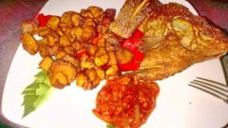Recette de tilapia grillé avec
aloco et sa petite sauce tomate
propose par Raissa. Pour
RECETTES DE VIANDE
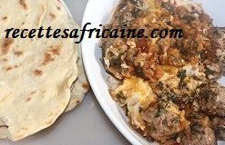Bonjour la famille je vous
propose aujourd'hui cette
recette de viande hachée
appelée Tajine de
RECETTE DE RIZ
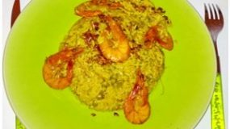Recette de crevettes sautées
sur leur lit de riz au safran
proposée par Jessica sahou,
Recette
SAUCES AFRICAINES
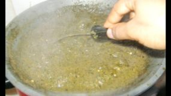La sauce feuilles de manioc queje vais vous présenter tout de suite est l’une de mes préférées
RECETTES D’HARICOTS
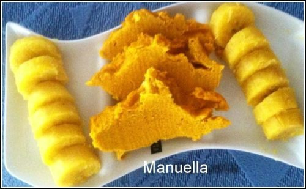Pour 4 à 5 personnes... Prendre 5 boites de haricots à œil noir et les tremper toute une
RECETTES D’ATTIEKE
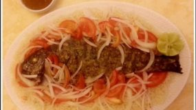Recette d'Attiéké au poisson et la sauce tomate proposee par Christelle. Ingrédients: Pour …
RECETTES DE COUSCOUS
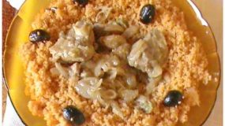Une recette de Couscous simple et délicieuse proposée par Haboza A. Konate de notre page
RECETTE DE SALADE
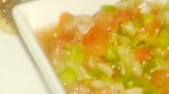La recette de la Sauce Moyo, proposée par Iris. la sauce moyo est une sauce qu'on accompagne avec
RECETTES DE FETES
Ingrédients: 1kg de riz parfume 1kg de Poulet 1 litre et demi d’eau 250 ml d’huile
RECETTE DE POULET
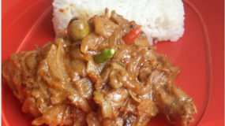Le Yassa au poulet est ce plat délicieux du Sénégal. Et lorsque j’entends le mot Sénégal, tout
RECETTES RAPIDE
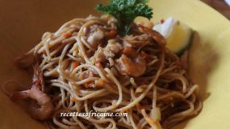Bonjour les amis aujourd'hui je vous propose cette recette de nouilles au crevettes sautées avec des
RECETTES DE BOISSONS
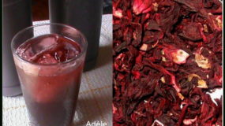Le jus de bissap n’est pas seulement la boisson privilégiée lors des fêtes en Afrique mais il est aussi très